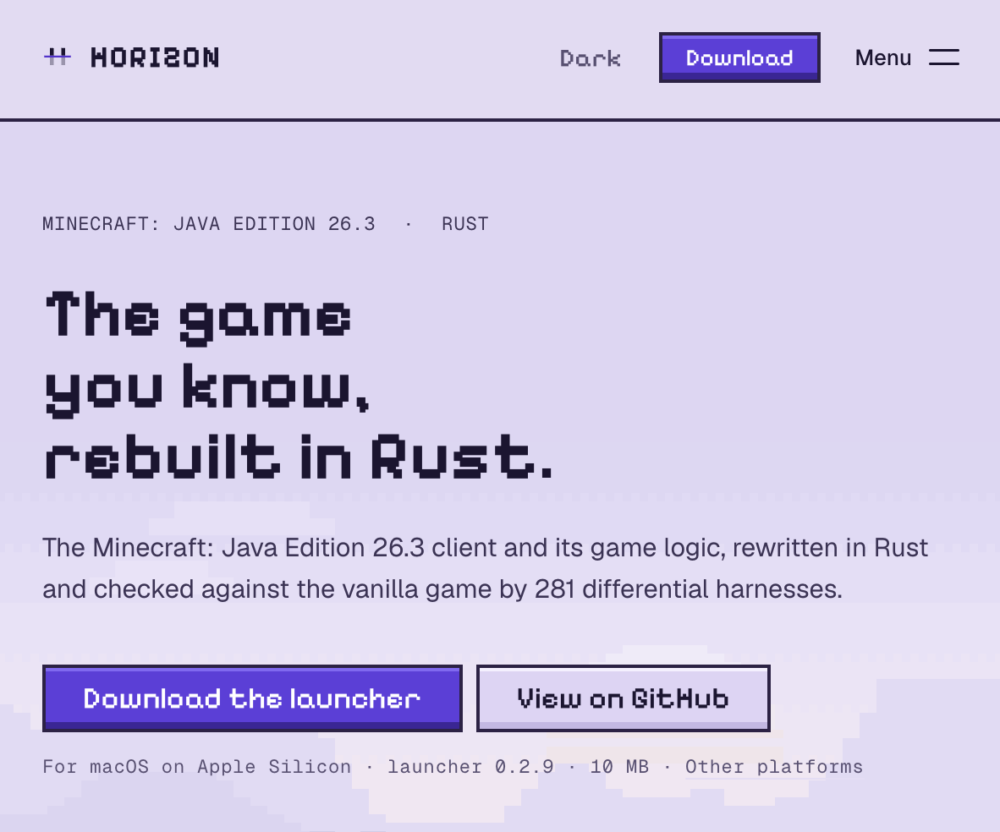

I recently came across an interesting project: Horizon. Someone has started rewriting Minecraft in Rust.
My first thought on opening the website was: how does this look more Minecraft than Minecraft’s own website?
The stone-textured background, pixel landscapes, and familiar blocky screenshots had me wanting to jump in and dig up some dirt before I’d even read the introduction. Whoever made the site clearly gets the appeal.

Looking at it, I felt both curious and a little puzzled.
There seem to be more and more projects recreating existing software and games. Rebuilding something this complex is impressive. But once you’ve said that, the question remains: what comes next? Why would players switch?
Three weeks, more than four thousand commits
Horizon appeared on GitHub in early October. Roughly three weeks later, it already has more than four thousand commits.
Looking through its early history, it started as a Minecraft decompilation and Rust optimization lab. A few days later, the Rust rewrite landed on the main branch, with world generation, mining, crafting, containers, and saves already working. Since then, the project has added a launcher, a server, a mod system, and a website.

That’s a fast pace. The project is also open about how it works: Ludovic Marie decides the direction and what ships, while most of the code is written by the Claude agents he runs and by contributors using their own AI tools. Some contributors write code by hand. Not every line gets a human review; the project relies heavily on automated checks and comparisons against vanilla Minecraft.
That puts the commit count in a different light. As code gets produced faster, keeping up with review and maintenance matters more.
The same world, down to how it’s generated
Horizon targets Minecraft: Java Edition 26.3. It aims to reproduce vanilla behavior, including the rules, saves, and world generation.
Here, “vanilla” means the original game without extra mods. It isn’t a special world mode. The goal includes normal world generation, rather than simply producing a blocky landscape that looks like Minecraft.
If you’re making your own block-based game, you can decide what mountains look like and where villages go. Horizon has set itself a harder task: given the same input, produce the same result as the original.
There’s a practical reason for that. Familiar seeds, saves, and ways of playing are easier to carry over when the rules stay consistent. If changing the language also changes redstone machines and world generation, players end up paying the cost of the move.
The project uses differential testing: feed Horizon and the actual vanilla game the same inputs, then compare their outputs. Its world-generation status table reports matching results across all three dimensions, covering 225 structure sites and 2,352 complete chunks.
But the “100%” on the website comes with a qualification. As the project itself explains, it means the parts actually compared by the tests. It doesn’t establish that every seed, location, and possible action behaves identically.
Yes, you need to launch the original game once
The installation guide is clear about this: you need your own copy of Minecraft Java Edition 26.3, and you need to launch it once so the launcher downloads the required files. The official launcher works, as do compatible launchers such as Prism.
Horizon then runs a Prepare step using that local installation. The project says it doesn’t ship Minecraft code, assets, or data; players need their own legally obtained copy.
So those familiar blocks and mobs don’t mean someone has recreated the entire art library as well.
The initial preparation uses Java 25. According to the FAQ, it runs vanilla’s data generator to read information such as items’ default components. Once preparation is done, Horizon’s game and server run without Java.
There’s a small lag between the documentation and the implementation here. The installation page still says JDK 25, while the latest main branch’s preparation tool documentation makes a distinction: release packages include precompiled exporters and only need a Java runtime. A full JDK is needed for development or changes to the exporters. That doesn’t mean every player needs to install a development environment separately.
The process is a little more involved than borrowing a few textures. The runtime has been rewritten, but the initial setup still draws on data from the original game.
My first reaction was something like: perhaps gameplay can be recreated, but coming up with the original idea is another matter.
On reflection, I’d leave that as a question. Reusing the assets shows how much the project depends on the world Minecraft has already established, but it doesn’t tell us that its author lacks creativity. Compatibility is the task Horizon has chosen, so it deliberately leaves less room for changes to the gameplay.
What interests me is what happens as AI makes it easier to rebuild something against an existing target. How much of what comes out of that will be worth using for years?
What does it add beyond the rewrite?
According to the project’s introduction, Horizon aims to keep the vanilla gameplay while starting faster, using less memory, and running more smoothly. Those are benefits people can feel more directly than “it’s written in Rust.”
It also bundles features that vanilla Java doesn’t include: graphics presets, more distant terrain, native controller support, and optional extras such as a minimap, zoom, and dynamic lights. You can share a world with friends through an invite code, too. For someone who doesn’t want to fiddle with mods, having these things built in may matter more than the language underneath.
On performance, the project runs as native Rust code, moves chunk generation, lighting, and meshing onto worker threads, and reduces draw calls. What that delivers in practice needs testing.
Horizon has published client benchmarks, so there are actual comparisons to look at. It tests on the same machine, with the same world seed, render distance, and camera route, and describes the limitations of its setup.
For example, on its RTX 4080 desktop, Horizon averaged 2,993 FPS at render distance 12, against vanilla Java’s 2,600. At render distance 32, the figures were 672 for Horizon and 849 for Java. Memory use while playing at that distance was 1.6 GB and 3.3 GB respectively, in Horizon’s favor.
That’s more interesting than a blanket claim that Rust beats Java. Lower memory use and higher frame rates don’t always arrive together.
These are the project’s own measurements, with a limited number of runs. Some machines were also doing other work during testing. The website’s hardware picker includes estimates, which shouldn’t be mistaken for measurements taken on those machines.
On the server side, the project has compared Horizon with vanilla, Paper, and Fabric with Lithium under the same workload. The report shows advantages for Horizon in memory use and some load conditions, while Paper had a shorter average tick time at every player count tested.
The performance is worth watching, but players already have optimization mods and alternative servers to choose from. A new implementation still has to offer a reason to pick it over those options.
Letting an AI go mining
Horizon comes with horizon-ctl, which can read game state, find blocks, navigate, mine, manage inventory, take screenshots, and read logs. The same commands can be exposed to an agent through MCP.
That lets an AI receive structured state and issue game actions instead of having to infer everything from the screen. The client guide describes the interface.
What’s interesting is how early this has appeared in the project. AI agents are becoming users that developers plan for from the start. Alongside making software comfortable for people, there’s now the question of whether an agent can read its state and call its functions. With Horizon, while players are still figuring out installation, the interface for an agent to go chop down a tree is already waiting.
Mojang’s official Minecraft Creator Tools also provides MCP support. It mainly helps people create and test Bedrock add-ons, though it can interact with game sessions too. Horizon leans more toward acting like a player: walking to a tree, chopping wood, sorting inventory, and moving on to the next task. They serve different purposes; counting which has more features doesn’t tell us much.
I can see something interesting here. As well as being playable by people, a game can offer an interface that makes it easier for programs to observe and control it. That could be useful for automated testing, reproducing bugs, or studying agent capabilities. How reliably it works will depend on trying actual tasks.
Moving fast also means redoing things
Horizon has already had some rework: after an Iris developer pointed out that its shader-pack code had been written using Iris’s source, the project removed that implementation, with plans to rebuild it.
That reminded me of working on EnvMate. Only after releasing it did I discover an existing product online with a very similar interface. The design the AI had produced already had a lookalike; I just hadn’t known about it.
Of course, similar interfaces don’t establish that the AI copied anyone. But we don’t really know what it drew on or which familiar designs found their way into the result. Getting something built can be quick. Discovering these issues may happen after release.
Can existing players make the move?
After years of Minecraft, players have their own setups: worlds still under construction, favorite mods, regular servers, and friends to play with. Switching clients is one thing. Bringing all of that along is harder.
Saves are one part that may carry over. Horizon uses vanilla’s save format and provides support for upgrading older worlds. Mods are trickier: Java mods for Fabric, Forge, and NeoForge don’t run directly in it. Some assets and data can carry over, but a mod’s machines, logic, and custom mechanics won’t automatically come with them. A familiar modpack could turn into a very different experience. The mod documentation acknowledges those limits.
Multiplayer has another hurdle. Horizon’s client can’t currently sign in to a Microsoft account, so it can’t join servers that require account verification. For now, it can mainly join offline-mode servers. For players who already have a regular server and friends there, that can matter more than a higher frame rate.
Horizon has also rewritten the server and provides a hosting guide. Anyone who wants to host a world for friends can try its Rust server; vanilla 26.3 clients can join it too.
What comes after the rewrite?
I don’t know the Minecraft ecosystem all that well. My kid loves it, and the version I play is the Chinese edition operated by NetEase. I couldn’t say whether Horizon will persuade longtime players to switch. But seeing it get this far in a few weeks has certainly made me curious.
Still, after seeing so many AI recreation projects, I keep wondering what comes after rebuilding something familiar. Lower resource use, easier hosting, or an agent to play alongside you could all be reasons to keep going.
Recreating something can be fun in its own right. But more than seeing what gets recreated next, I’d like to see what new things grow out of it.
Sources checked as of October 26, 2026. This article is based on public documentation, source code, and benchmarks published by the developers. I haven’t installed or tested the game myself. Website asset credits are listed in the site’s asset notes.